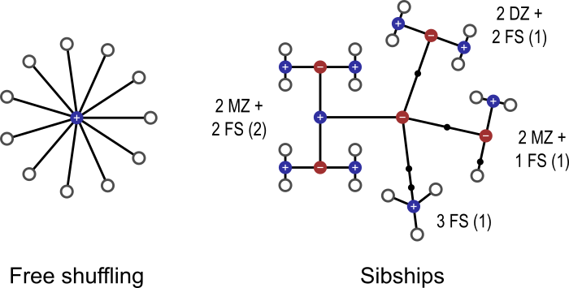

|
Permutation methods are a class of statistical tests that, under minimal assumptions, can provide exact control of false positives (i.e., type I error). The central assumption is simply that of exchangeability, that is, swapping data points keeps the data just as likely as the original. With the increasing availability of inexpensive large-scale computational resources and openly shared, large datasets, permutation methods are becoming popular in neuroimaging due to their flexibility and ease of concern about yielding nominal error rates than parametric tests, which rely on assumptions and/or approximations that may be difficult to meet in real data. This becomes even more important in the presence of multiple testing, in that assumptions may not be satisfied for each and every test, and the correlation across tests may be difficult to account for. However, even exchangeability can be violated in the presence of dependence among observations, and it may not always be clear what to permute. The aim of this blog post is to emphasize the relevance of linking the null hypothesis and the dependence structure within the data to what should be shuffled in a permutation test. We provide a few practical examples, and offer some glimpses of the theory along the way. Example 1: Permutation mechanics Let’s begin by reviewing the mechanics of a permutation test. Consider a comparison between two groups, for example whether hippocampal volume is different between subjects with Alzheimer’s disease (AD) and demographically matched cognitively normal controls (that is, a group with similar age, sex, education level, etc). If we assume that in both groups the hippocampal volumes are independent samples from a Gaussian distribution, a classical parametric two-sample t-test can be used to test for a difference between means of the two groups. However, this distributional assumption may not be true, and departures from this assumption can potentially lead to incorrect conclusions. In these circumstances, permutation tests perform better than parametric tests by providing a valid statistical test with much weaker assumptions. Specifically, under the null hypothesis that the hippocampal volume has no actual difference between AD cases and controls, the group membership (or the label of case and control) becomes arbitrary, that is, any subject from one group might as well have been from the other. While it may seem implausible that this would be the case for patients and controls, in fact this is what we are testing: all else being equal (that is, exchangeable), and any difference found must relate to the means, which is what we are interested in. In fact, a classical parametric two-sample test (with equal variance) makes not just the same assumption, but also further assumes that patients and controls come from the same Gaussian distribution. Permutation tests do not require Gaussianity; it suffices that the data are merely exchangeable. Exchangeability further relaxes another important assumption of parametric tests: independence. Data that are not independent may still be exchangeable, either globally or under certain restrictions, as presented in more detail in Example 3 below. With exchangeability, we compute the t statistic under each permutation, and produce the permutation distribution of the statistic under the null. The permutation distribution is the empirical cumulative distribution function (cdf) obtained from the data themselves, as opposed to from some idealized distribution, as is the case with parametric tests. The observed test statistic can be considered a random sample from the permutation distribution because it is equally likely to have arisen from any case-control re-labeling given the null hypothesis. The p-value is the probability of finding a test statistic for the group comparison at least as high as the one observed, provided that there is no actual difference (i.e., null hypothesis is true). So, the p-value can be calculated by randomly permuting the group labels many times, each time recalculating the test statistic; at the end of the process, we check how often a larger statistic was observed than the original (before any shuffling had been applied), and divide that by the number of permutations performed. Figure 1 shows an example in which there are three subjects in each group; before any permutation is done, the test statistic is t = +0.7361. After exhaustively computing all 20 possible permutations, we see that 4 of these (including the non-permuted) are higher than or equal to +0.7361. Thus, the p-value is 4/20 = 0.20. If we had decided beforehand that our significance level would be 0.05, we would say that the result of this test is not significant, that is, there is no significant difference in hippocampal volume between AD patients and controls. Figure 1: Consider the hippocampal volume measured in 6 subjects, three with Alzheimer’s disease, and three cognitively normal controls. The values measured are shown in the boxes (ranging between 3498 and 3588), controls in blue, AD patients in green. The test statistic for a difference Controls > AD is t = +0.7361. If there is no actual difference between the two groups, then the group assignment can be randomly permuted. For each such permutation, a new test statistic is calculated. In this example, four t statistics (shown in red) computed after random permutations of the group assignments, out of the 20 performed, were equal to or larger than the observed, non-permuted statistic. The p-value is therefore 4/20 = 0.20. Example 2: Permutation with the presence of nuisance Suppose in Example 1 that there were other variables that could potentially explain some of the variability seen in hippocampal volume. Some of these variables could even be associated with diagnosis itself. For example, it may be the case that, in this particular study, AD patients were older than cognitively normal controls. To account for these nuisance variables, we can formulate the problem as a multiple regression, in which hippocampal volume is the dependent variable, whereas the case-control status, along with other potential nuisance variables, are the independent variables. We would then test whether the regression coefficient corresponding to the case-control label is significantly different than zero. Now it is less clear what should be permuted. If we permute just the group labels, what to do with the other variables in the model? It turns out that various approaches have been considered in the literature. Systematic evaluations show that, among a host of permutation and regression strategies, the method attributed to Freedman and Lane provides accurate false positive control in the presence of nuisance variables and is robust to extreme outliers in the data. In the Freedman-Lane method, we regress out all nuisance variables from the hippocampal volume measurements to obtain the residuals of this nuisance-only model, and use the permuted residuals as the new dependent variable in the multiple regression, from which we construct the permutation distribution for the test statistic (i.e., the regression coefficient of interest). Intuitively, once the nuisance has been regressed out, what remains should be indistinguishable between AD patients and controls if the null hypothesis is true, and thus, can be permuted. We note that whichever regression and permutation strategy is adopted, it is crucial that what is permuted is what would render the subjects different were the alternative hypothesis true. It is not relevant to permute aspects of the dataset that would not be affected should the null hypothesis be false, that is, should an effect actually exists. This is important because, when an experiment becomes complex (e.g., with multiple factors, levels, nuisance variables, and/or multiple response variables), it can be easy to permute aspects of the data that are not informative with respect to the null hypothesis. One should not lose sight of what is being tested, and permute the data accordingly. Example 3: Permutation with the presence of dependence in observations Data are not always freely exchangeable. It may be the case, for example, that there are repeated measurements from the same subjects among the observations. Or maybe some or all subjects are twins, siblings, or otherwise relatives. Cases such as these restrict the possibilities for permutations, but even so, permutation tests continue to be possible. They proceed in a similar manner as in the examples above, but care needs to be taken when selecting the permutations that are allowed. Exchangeability as defined above — that is, permuting the data keeps them just as likely as originally observed — must be preserved. More technically, it means that the joint distribution of all the data points must remain unchanged under the null. For example, in a twin study, one could permute the subjects within twin pairs, and pairs of twins could be permuted as a whole, but one sibling should never be mixed with the sibling from a different family; see an example in Figure 2. These restrictions, unfortunately, tend to reduce power compared to the analyses in which all subjects are independent and freely exchangeable. However, all other benefits of permutation tests are kept.  Figure 2: Observations that are not independent restrict the possible rearrangements of the data. In this figure, each white circle represent an observation (e.g., a measurement from a subject), the blue (+) or red (−) dots indicate whether the branches that originate at that dot are or are not exchangeable, respectively, and therefore indicate observations that can be permuted with each other. On the left, 10 unrelated subjects who are freely exchangeable. On the right, 18 subjects, some of which were recruited along with their siblings (FS), and/or with their monozygotic (MZ) or dizygotic (DZ) twin. Siblings must be kept together in every rearrangement of the data, which needs be performed in blocks; subjects within a sibship can be permuted; some families may have both twins and non-twins, which requires nested blocks. (Figure licensed under CC-BY 4.0. https://creativecommons.org/licenses/by/4.0/) Consider a longitudinal extension of the AD patients vs. controls example, in which two measurements are obtained from each subject, one before and another after an intervention is applied. As per above, the measurements must stay together within subject. However, depending on what is being tested, we may permute the data only within-subject, or only the subjects as a whole while keeping the order of intra-subject measurements unaltered, or do both things simultaneously. Within-subject effects (that is, the effect of treatment) would require that permutations happen within-subject, whereas between-subject effects would require permutations of the subjects as a whole. Interactions in a mixed design (within and between-subject effects) could benefit from both types of permutation. Crucially, what needs to be permuted is what would be equal should the null hypothesis hold, and that would differ should the alternative hypothesis be actually true. Example 4: Comparison between models Now suppose that, in our AD example, in addition to hippocampal volume, we have also measured the amygdala volume for each subject, and are interested in investigating whether hippocampal volume is a better biomarker of AD than amygdala volume (for example, in terms of standardized mean difference between cases and controls as measured by the Cohen’s d statistic). It is tempting to permute the case-control label, but this strategy turns out to be wrong as it completely breaks the associations between the hippocampal/amygdala volume and disease status, which should be retained under the null hypothesis. In fact, in this example, it is unclear what to permute. As a second example, if we want to test whether the mean of hippocampal volume in AD cases is significantly different from a fixed value (e.g., the typical size of hippocampus in normal aging subjects), it can be seen that there is nothing to permute. In these circumstances where a permutation test is difficult to apply, we need to resort to other methods such as the bootstrap for statistical inference. The bootstrap is an established data-based simulation method, which is often used to assign measures of accuracy, such as standard error, bias, and confidence intervals, to a statistical estimate. It essentially uses the observed data to define an empirical distribution that estimates the unknown underlying data-generation mechanism, and then generates bootstrap samples and bootstrap replications of the statistic of interest using the empirical distribution, from which measures of accuracy can be calculated. Bootstrap can be applied to virtually any statistic and a wide variety of situations. For example, by sampling cases and controls with replacement independently, we can calculate the standard error or construct confidence intervals for the Cohen’s d statistic for hippocampal and amygdala volume, respectively, as well as for the difference of the two Cohen’s d. Given the strong connection between confidence intervals and hypothesis testing, a p-value can also be produced indicating whether the difference in Cohen’s d is significantly different from zero. In fact, bootstrap can be applied to hypothesis testing, including the questions described in Examples 1-3. However, unlike the permutation p-value, which is exact, the bootstrap significance is only approximate and thus less accurate. Therefore, permutation is a natural and favorable choice when the null/alternative hypothesis is well defined and what to permute is clear. Bootstrap is useful when the primary goal is to quantify the accuracy of an estimate or when a permutation test is not available in a hypothesis test (e.g., nothing to permute). That said, we also caution that bootstrap relies on an accurate empirical estimation of the true underlying probability distribution. Thus the sampling procedure requires careful consideration in order to respect the data generation mechanism in the presence of complex data structures. For example, block bootstrap is often used to replicate correlations within the data, while variants of the wild bootstrap are used to capture heteroscedasticity in the sample. Summary
Practical advice: It's easy to get started with permutation methods in brain imaging. Most software packages have some sort of permutation test implemented. AFNI's 3dttest++ now uses permutation by default for cluster inference with the -ClustSim option; BrainVoyager has a randomisation plugin (permutation tests are sometimes called randomisation tests); Freesurfer can do permutation with mri_glmfit-sim; FSL has its randomise tool; and SPM has the SnPM toolbox. Finally, PALM is a standalone tool for permutation that works with different types of input data and has various advanced features.
4 Comments
Johan Carlin
3/20/2018 09:34:44 am
Great post. 3/22/2018 05:02:35 am
Hi Johan, 11/15/2019 12:31:09 pm
sign-flipping on what? it can be done with permutations or as bootstrap. But it is NOT a form of boostrap in general.
Yo you missed Perm #13, the real p-value should be 5/20 = .25. Also, multiple statements indicate: Your comment will be posted after it is approved.
Leave a Reply. |
BLOG HOME
Archives
August 2023
|
 RSS Feed
RSS Feed